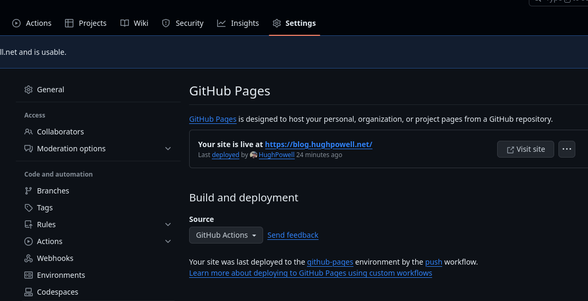
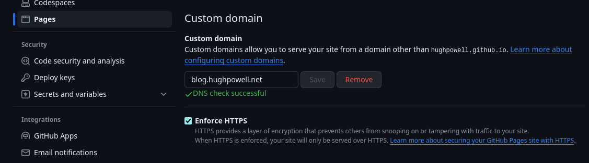

So this is my first post. Not the first first post I've written, but maybe this time it'll stick (hopefully). I'm using quickblog from the incomparable borkdude. Once I had followed the instructions in the README to get a skeleton first post up, I headed over to the Anders Means Different blog for instructions on how to get my blog published on GitHub pages using GitHub Actions.
Having copied the yaml workflows file to my blog's .github/workflows/ directory, the initial deployment failed. This is because I had failed to set the `Build and Deployment: Source` as "GitHub pages", rather than "Deploy from a branch", in my blog's repo.

Once I successfully re-ran the deploy action I could reach my shiny new blog at https://hughpowell.github.io/blog. GitHub automatically serves the site at
Having got everything up and running on GitHub pages I now wanted to see if I could have it served from a custom domain. Thankfully that's pretty straight forward, you just need to create a CNAME record in your DNS host. In may case this was pointing from blog.hughpowell.net to hughpowell.github.io/blog. The last thing was to tell GitHub that I was using a custom domain and wait for it to pick it up and generate an HTTPS certificate for my custom domain.

That's all for now. In my next post I plan to start working through Mark Seemann's book Code that fits in your head and translating the examples into Clojure.
Published: 2024-01-05
Tagged: quickblog